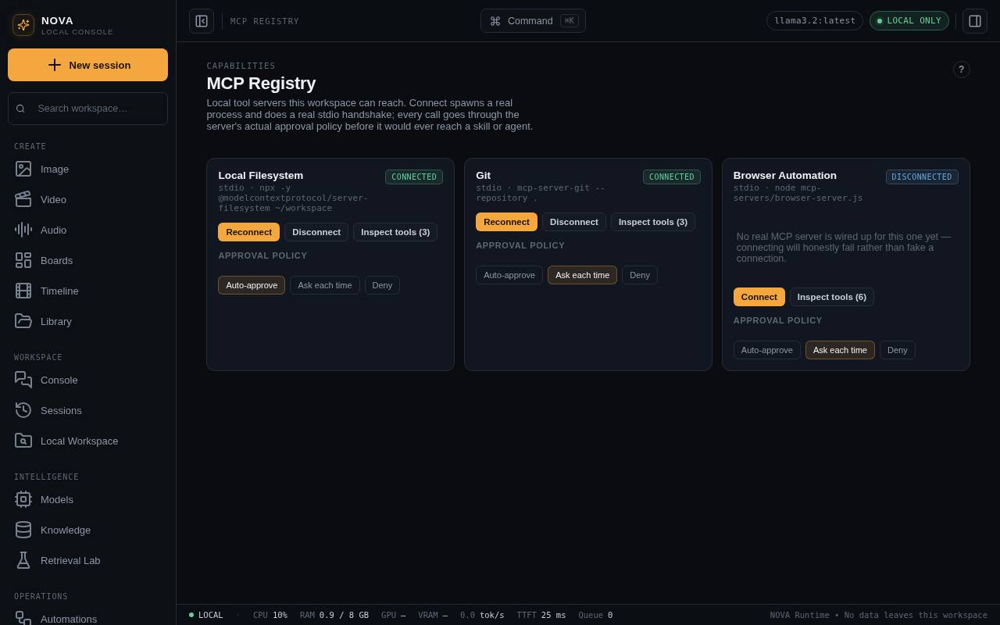

Tools and approvals (MCP Registry)
The tool servers models can call — files, git and a web browser — and how NOVA asks before anything happens.
Tool servers give models real abilities: reading files, checking git, browsing the web. NOVA starts each server as a local child process and talks to it over the MCP protocol.

The built-in servers
| Server | Tools | Notes |
|---|---|---|
| Local Filesystem | list and read files in approved folders | Only paths its policy allows |
| Git | status, log, diffs | Read-only |
| Browser Automation | open a page, read its text, list links, click, type, screenshot | Headless Chromium; connects only while network access is on; http and https only |
Before you call a tool
- Check the server shows Connected.
- Read the tool's description and inputs.
- Check the server's approval policy: ask (a person approves each call) or allow.
- Approve only the request you mean to allow.
Pending approvals appear in the MCP Registry and wherever the call came from. Rejecting one stops that call. The same rules apply when an agent, skill or workflow makes the call; nothing bypasses them.
Good habits
- Disconnect a server you no longer need. Servers do not survive a NOVA restart and must reconnect.
- Keep ask on for anything that changes files or reaches the web.
- If Browser Automation reports that Chromium could not start, run
npx playwright install chromiuminnova-console.